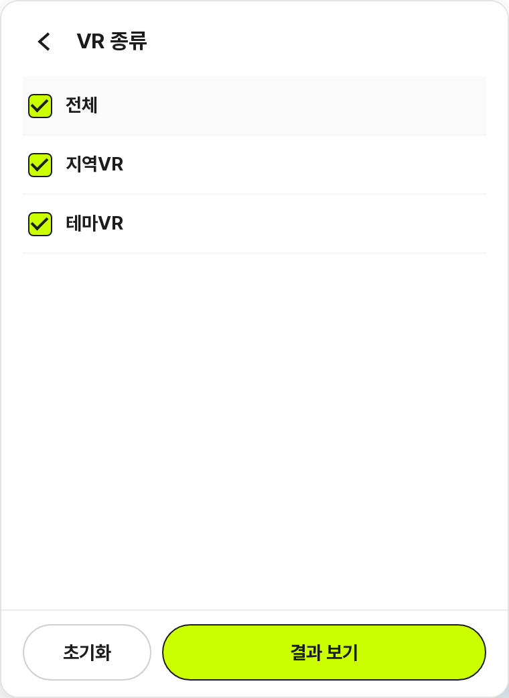
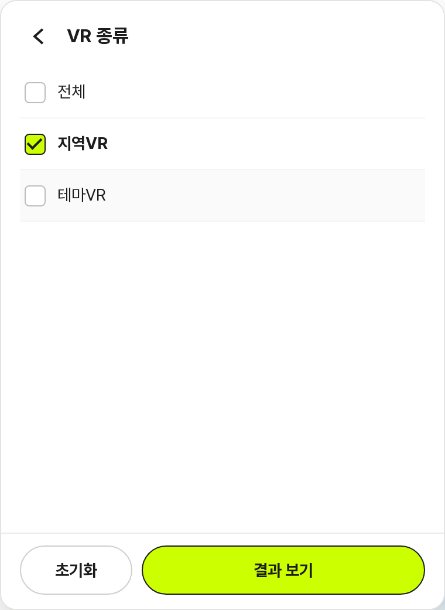
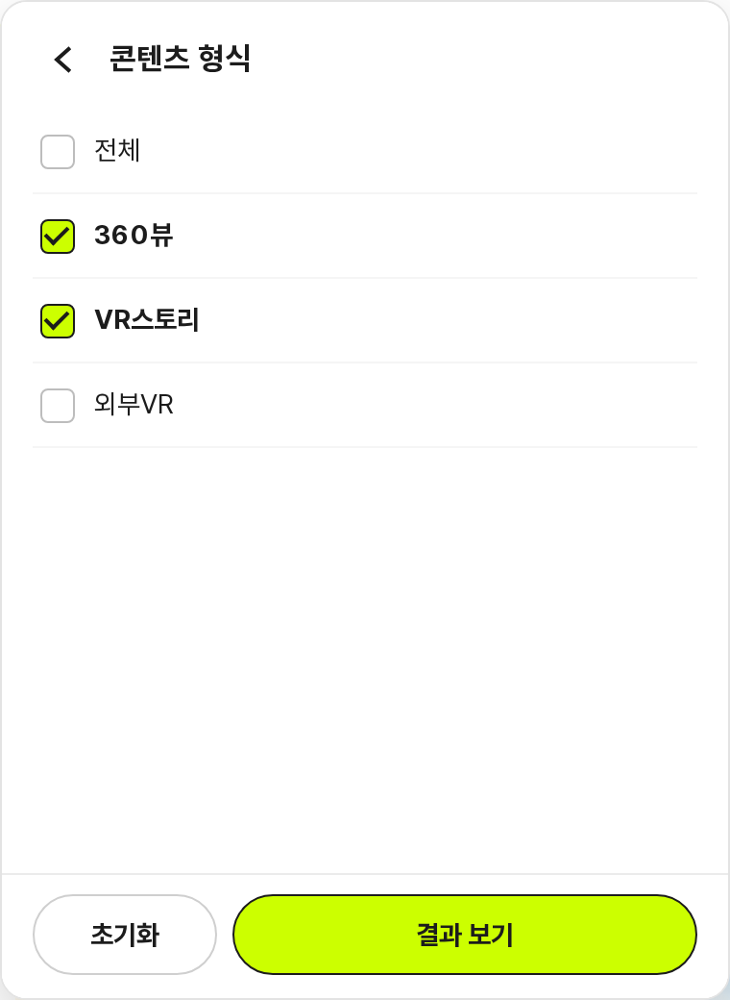
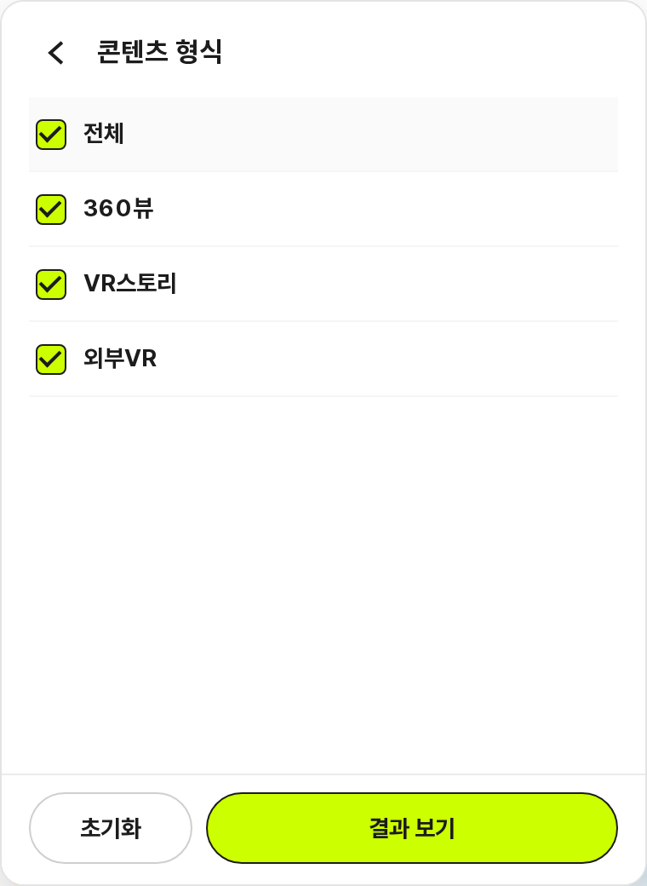
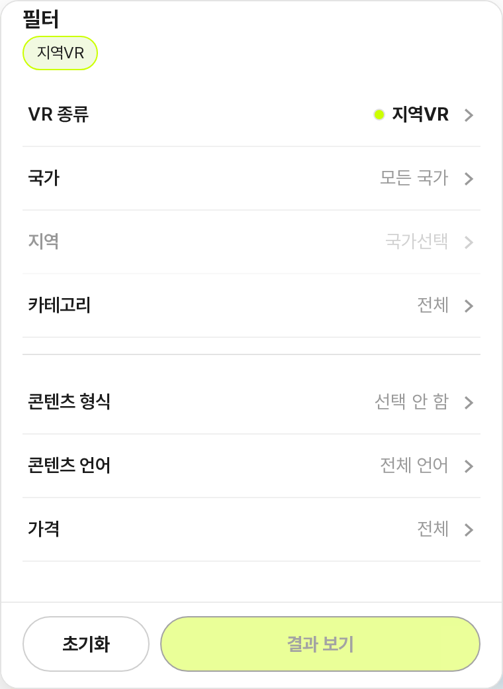
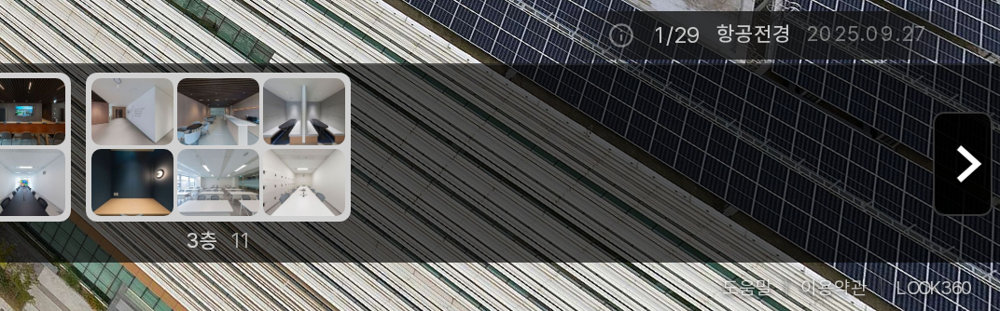

IND-9713 — vr-list 필터 「전체」 정비 · vrViewer 하단 화살표 (2026-11-20 · ko · PC 1440)
직접 확인: /vr-list → 「필터」 버튼 · /vr/xo6jh8ib → 하단 썸네일 오른쪽 화살표에 마우스 · 이슈 IND-9713
VR 종류 — 전체 = 모두 선택 · 전체 해제 없음

① 기본: 전체·지역VR·테마VR 전부 체크

② 테마VR 해제 → 지역VR 만 남고 전체도 풀림콘텐츠 형식 — 전체 토글 · 모두 해제 시 「결과 보기」 비활성

③ 기본: 360뷰·VR스토리

④ 전체 클릭 → 전부 체크
 ⑤ 전체 재클릭 → 전부 해제 · 「결과 보기」 비활성
⑤ 전체 재클릭 → 전부 해제 · 「결과 보기」 비활성

⑥ 첫 화면 콘텐츠 형식 값 「선택 안 함」vrViewer 하단 썸네일 오른쪽 화살표 hover

⑦ hover 상태(정지 화면이라 왕복 움직임은 링크에서 직접 확인)